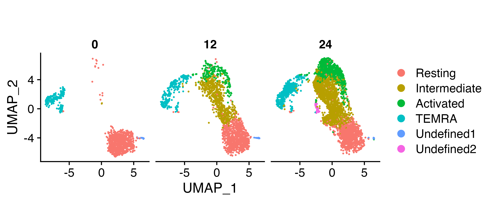

1. Broad overview of the workflow
pathways <- msigdbr("Homo sapiens") %>%
format_pathways()
# The populations here just need to be your normalized expression matrices
scpa_out <- compare_pathways(samples = list(population1, population2),
pathways = pathways)2. Full workflow on an example dataset
Here we’re just going to show some general principles of what you need to get started in a basic pathway analysis. It acts as a quick reference to all the main points of the workflow, but more detailed examples can be found in our other tutorials
Basic information needed for pathway analysis
The two main bits of information we need are:
- Expression matrix for each condition (this can be formatted as separate data frames/matrices, or stored within a typical Seurat object)
- Pathway gene lists
Loading in packages
For this simple example, we’re going to load in a few packages. msigdbr allows access to a large number of gene sets that are collated here
Loading in data
We can use the dataset from a paper we recently published, which is looking at naive CD8+ T cell activation.
load("naive_cd8.RData")Quick Look at the data
In this experiment we isolated CD45RA+ CD8+ T cells and either left them unstimulated, or stimulated them for 12 or 24 hours

Generating samples from a Seurat object
Let’s now generate two populations to compare. To do this we’ll use the seurat_extract function to extract expression matrices from our Seurat object. This function takes a Seurat object as an input, subsets data based on the Seurat column metadata, and returns an expression file for that given subset.
resting <- seurat_extract(naive_cd8,
meta1 = "Hour",
value_meta1 = 0,
meta2 = "Cell_Type",
value_meta2 = "Resting")
activated <- seurat_extract(naive_cd8,
meta1 = "Hour",
value_meta1 = 24,
meta2 = "Cell_Type",
value_meta2 = "Activated")Generate some gene sets using msigdbr
We then need to generate our gene sets. msigdbr is a handy package that allows you to get this information. Here we’re pulling all the KEGG pathways, and using the format_pathways function within SPCA to get them properly formatted. A detailed explanation of generating gene sets for SCPA can be found here
Comparing samples
We’re all set. We now have everything that we need to compare the two populations. So just run compare_pathways and use the objects we created above.
scpa_out <- compare_pathways(samples = list(resting, activated),
pathways = pathways)And in scpa_out, we have all our results.
head(scpa_out, 10)
#> Pathway Pval adjPval
#> 111 KEGG_PATHWAYS_IN_CANCER 2.003809e-109 3.246170e-107
#> 128 KEGG_REGULATION_OF_ACTIN_CYTOSKELETON 1.051250e-107 1.703025e-105
#> 12 KEGG_ANTIGEN_PROCESSING_AND_PRESENTATION 5.341958e-106 8.653972e-104
#> 38 KEGG_CYTOKINE_CYTOKINE_RECEPTOR_INTERACTION 5.341958e-106 8.653972e-104
#> 40 KEGG_DILATED_CARDIOMYOPATHY 5.341958e-106 8.653972e-104
#> 63 KEGG_GLYCOLYSIS_GLUCONEOGENESIS 5.341958e-106 8.653972e-104
#> 80 KEGG_JAK_STAT_SIGNALING_PATHWAY 5.341958e-106 8.653972e-104
#> 160 KEGG_VIBRIO_CHOLERAE_INFECTION 5.341958e-106 8.653972e-104
#> 87 KEGG_MAPK_SIGNALING_PATHWAY 2.629300e-104 4.259467e-102
#> 99 KEGG_NOD_LIKE_RECEPTOR_SIGNALING_PATHWAY 2.629300e-104 4.259467e-102
#> qval FC
#> 111 10.31933 -15.014099
#> 128 10.23566 -9.302054
#> 12 10.15198 -14.412388
#> 38 10.15198 -4.396872
#> 40 10.15198 -4.730892
#> 63 10.15198 -17.259595
#> 80 10.15198 -4.141457
#> 160 10.15198 -7.926807
#> 87 10.06830 -10.337041
#> 99 10.06830 -5.513138Plotting some basic output
You can use SCPA to plot some basic output. For example, we can highlight the “KEGG_GLYCOLYSIS_GLUCONEOGENESIS” pathway using the plot_rank function.
plot_rank(scpa_out = scpa_out,
pathway = "glycolysis")